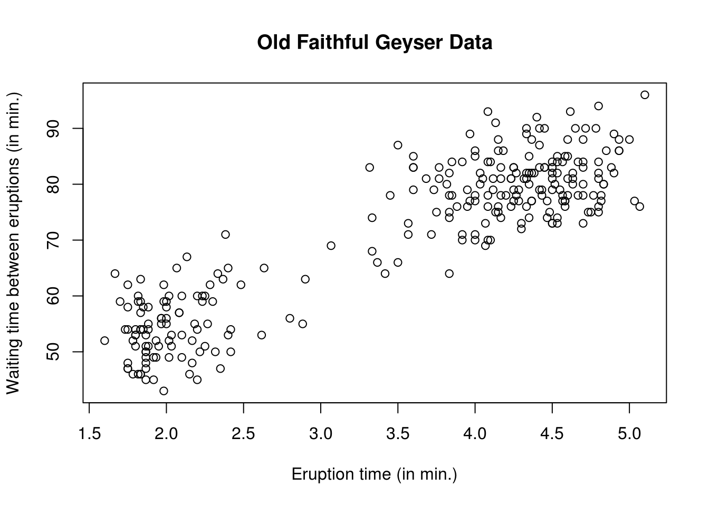
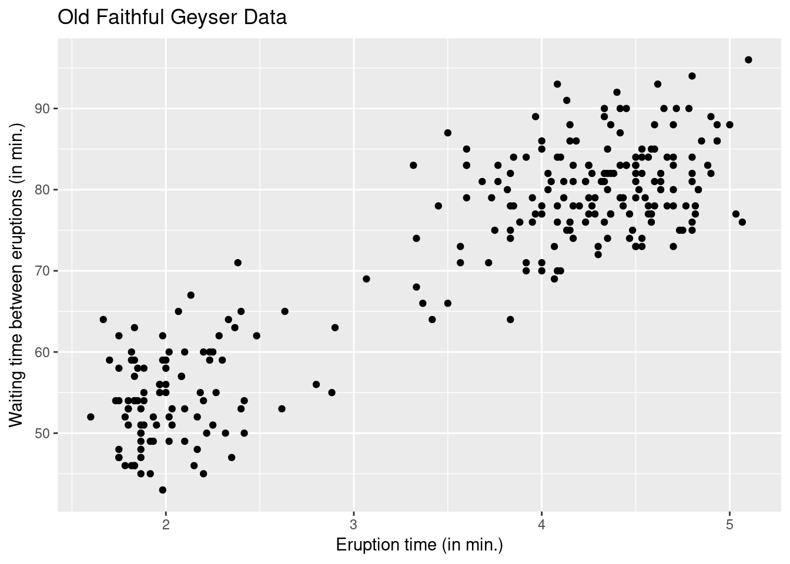

Week 1 Projection matrices
1.1 Introduction
Since R is not a conventional programming language, my teaching approach will be learning-by-doing. The benefit of using Rmarkdown is that you see the output directly and you can also copy the code.
Help can be accessed via help or simply ?. If you do not know what to query, use ?? in front of a string, delimited by captions " " as in ??"Cholesky decomposition". Help is your best friend if you don’t know what a function does, what are its arguments, etc.
1.1.1 Packages
The great strength of R comes from its contributed libraries (called packages), which contain functions and datasets provided by third parties. Some of these (base, stats, graphics, etc.) are loaded by default whenever you open a session.
To install a package from CRAN, use install.packages("package"), replacing package by the package name. Once installed, packages can be loaded using library(package); all the functions in package will be available in the environment. The drawback of this approach is that, if a function from another package is already present with the same name, it will be overriden. To palliate to this, you can use the :: syntax to access a single function from an installed package, following the model package::function.
1.1.2 Basics of R
You can find several introductions to R online. Have a look at the R manuals or better at contributed manuals. A nice official reference is An introduction to R. You may wish to look up the following chapters of the R language definition (Evaluation of expressions and part of the Objects chapter).
Some R commands are fairly intuitive, especially if you want to use your console as a calculator. Elementary functions such as sum, min, max, sqrt, log, exp, etc., are self-explanatory.
- Use
<-to assign to a variable, and=for matching arguments inside functions - Indexing in R starts at 1, not zero.
- Most functions in R are vectorized, so avoid loops as much as possible.
- integers are obtained by appending
Lto the number, so2Lis an integer and2a double.
Besides integers and doubles, the common types are logicals (TRUE and FALSE, note the capital letters). You can assign NULL pointers to arguments.
Special types exists for missing values, namely NA or NaN. These can also be obtained a result of invalid mathematical operations such as log(-2).
The above illustrates a caveat of R: invalid calls will often returns something rather than an error. It is therefore good practice to check that the output is sensical.
R is an object oriented language, and the basic elements in R are (column) vector. Below is a glossary with some useful commands for performing basic manipulation of vectors and matrix operations:
ccreates a vectorcbind(rbind) binds column (row) vectorsmatrixandvectorare constructorsdiagcreates a diagonal matrix (by default with ones)tis the function for transposesolveperforms matrix inversion%*%is matrix multiplication,*is element-wise multiplicationcrossprodcrossprod(A, B)calculates the cross-product,t(A) %*% Bof two matricesAandBeigen/chol/qrperform respectively an eigendecomposition/Cholesky/QR decomposition of a matrixrepcreates a vector of duplicates,seqa sequence. For integers \(i\), \(j\) with \(i<j\),i:jgenerates the sequence \(i, i+1, \ldots, j-1, j\).
Subsetting is fairly intuitive and general; you can use vectors, logical statements. For example, if x is a vector,
then
x[2]returns the second elementx[-2]returns all but the second elementx[1:5]returns the first five elementsx[(length(x) - 5):length(x)]returns the last five elementsx[c(1, 2, 4)]returns the first, second and fourth elementx[x > 3]return any element greater than 3. Possibly an empty vector of length zero!x[ x < -2 | x > 2]multiple logical conditions.which(x == max(x))index of elements satisfying a logical condition.
For a matrix x, subsetting now involves dimensions: [1,2] returns the element in the first row, second column. x[,2] will return all of the rows, but only the second column. For lists, you can use [[ for subsetting by index or the $ sign by names.
1.2 R-tutorial 1
1.2.1 Data sets
We start by loading a dataset of the Old Faithful Geyser of Yellowstone National park.
This is a data.frame object, a matrix whose columns can be of different types (integer, double, logical, character).
To load a package already present in an R package, use the command data with the name of the package as an argument (must be a string).
# Load Old faithful dataset
data(faithful, package = "datasets")
# Query the database for documentation
?faithful
# look at first entries
head(faithful)## eruptions waiting
## 1 3.600 79
## 2 1.800 54
## 3 3.333 74
## 4 2.283 62
## 5 4.533 85
## 6 2.883 55## 'data.frame': 272 obs. of 2 variables:
## $ eruptions: num 3.6 1.8 3.33 2.28 4.53 ...
## $ waiting : num 79 54 74 62 85 55 88 85 51 85 ...## [1] "data.frame"Other common classes are matrix and list. The former has attributes dim, ncol and nrow in addition to length, which gives the total number of elements. A list is an unstructured class whose elements are accessed using double indexing [[ ]] and elements are typically accessed using $ symbol with names. To delete an element from a list, assign NULL to it. data.frame is a special type of list where all the elements are vectors of potentially different type, but of the same length.
1.2.2 Graphics
The faithful dataset consists of two variables: the regressand waiting and the regressor eruptions. One could postulate that the waiting time between eruptions will be smaller if the eruption time is small, since pressure needs to build up for the eruption to happen. We can look at the data to see if there is a linear relationship between the variables.
There are two options: the base graphics package and the package ggplot2. The syntax for the two options is detailed below. Always label the axis and include units.
# Scatterplots
# Using default R commands
plot(waiting ~ eruptions, data = faithful,
xlab = "Eruption time (in min.)",
ylab = "Waiting time between eruptions (in min.)",
main = "Old Faithful Geyser Data")
#install.packages("ggplot2") #do this once only
#using the grammar of graphics (more modular)
library(ggplot2)
ggplot(data = faithful, aes(x = eruptions, y = waiting)) +
geom_point() +
labs(title = "Old Faithful Geyser Data",
x = "Eruption time (in min.)",
y = "Waiting time between eruptions (in min.)")
A simple linear model of the form \(y_i = \beta_0 + \beta_1 \mathrm{x}_i + \varepsilon_i\), where \(\varepsilon_i\) is a noise variable with expectation zero and \(\mathbf{x} = \mathsf{eruptions}\) and \(\boldsymbol{y} = \mathsf{waiting}\). We first create a matrix with a column of \(\mathbf{1}_n\) for the intercept. We bind vectors by column (cbind) into a matrix, recycling arguments if necessary. Use <- to assign values to a variable and $ to obtain a column of the data frame
## Manipulating matrices
n <- nrow(faithful)
p <- ncol(faithful)
y <- faithful$waiting
X <- cbind(1, faithful$eruptions)We can now create an orthogonal projection matrix X onto the \(\mathsf{span}(\mathbf{X})\). We can verify the properties of \(\mathbf{H}_{\mathbf{X}}\) numerically using all.equal to check for equalities.
1.2.3 Projection matrices
Hx <- X %*% solve(crossprod(X)) %*% t(X)
# Create projection matrix onto complement
# `diag(n)` is the n by n identity matrix
Mx <- diag(n) - Hx
#Check that projection leaves X invariant
isTRUE(all.equal(X, Hx %*% X))## [1] TRUE#Check that orthogonal projection maps X to zero matrix of dimension (n, p)
isTRUE(all.equal(matrix(0, nrow = n, ncol = p), Mx %*% X))## [1] TRUE## [1] TRUE## [1] TRUE#Check that only a two eigenvalue are 1 and the rest are zero
isTRUE(all.equal(eigen(Hx, only.values = TRUE)$values, c(rep(1, p), rep(0, n - p))))## [1] TRUE#Check that the matrix has rank p
isTRUE(all.equal(Matrix::rankMatrix(Hx), p, check.attributes = FALSE))## [1] TRUEYour turn
- Install the R package
ISLRand load the datasetAuto. Be careful, as R is case-sensitive. - Query the help file for information about the data set.
- Look at the first lines of
Auto - Create an explanatory variable
xwith horsepower and mileage per gallon as responsey. - Create a scatterplot of
yagainstx. Is there a linear relationship between the two variables? - Append a vector of ones to
xand create a projection matrix. - Check that projection matrix is symmetric and idempotent.